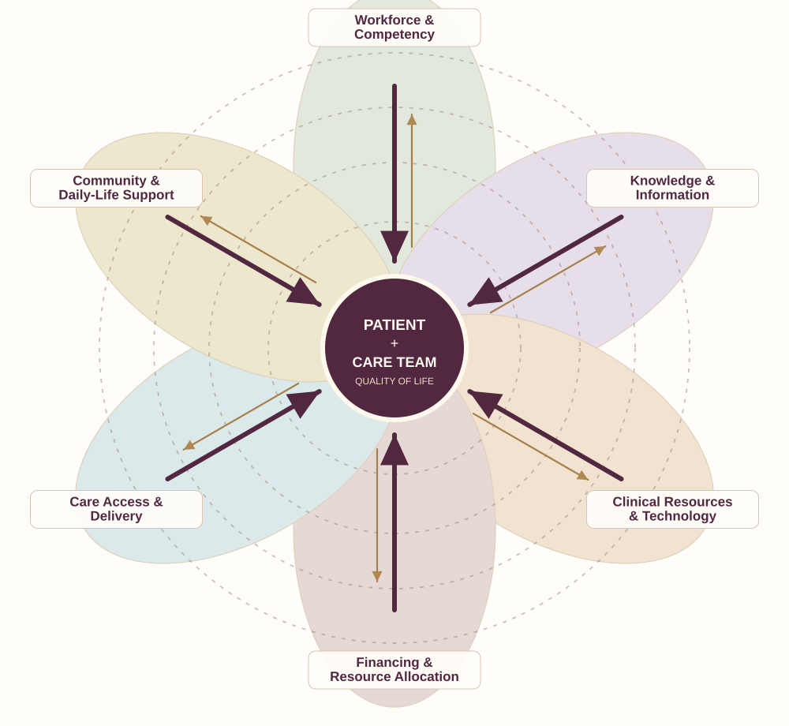

01 / CONNECT
Establish continuity
Define a care team, its responsibilities, and a dependable way to maintain contact across encounters and settings.
Healthcare happens between people. The patient and care team are the center, where evidence, clinical judgment, individual circumstances, and available resources come together.
A dependable system organizes everything around that relationship to support timely, effective care.
The patient and adaptive care team are the focal point. Six dynamic corridors bring people, evidence, resources and practical support toward care. Four quieter rings illustrate proximity: direct support close to the encounter, sustainable infrastructure further out. The rings also suggest connections among corridors.

Bold inward arrows: support and capability delivered toward care. Fine outward arrows: needs, outcomes and learning returned to the system. Concentric rings: proximity and lateral support. The diagram describes functions, not a mandated ownership structure.
Patient and adaptive care team working toward quality of life.
Six active resource corridors that maximize and sustain care capacity.
Proximity-based support, from direct clinical help to long-term infrastructure and governance.
Patient-reported experience and goals, together with objective clinical findings and outcomes
Experience, needs, preferences, participation and agency
Professional competence, personal strengths, shared knowledge and clinical confidence
Emergency action when required; appropriate help today; flexible consultation; clear next responsibility; continuity along the patient's arc
Care leadership and direct treatment may be held by different team members. Common safeguards support variation in how carepods organize effective care. Informed consent and appropriate professional scope remain essential.
Communication, follow-up, coaching, navigation, coordination and immediate assistance.
Qualified consultation, diagnostics, therapies, emergency pathways and clinical transitions.
Workforce support, records, staffing, scheduling, supplies, protocols and protected team reflection.
Sustainable infrastructure, safety standards, funding, measurement and shared learning.
Today's system has remarkable clinical capabilities, but independent decision structures can shape care through overlapping policies, interpretations, and constraints. At the delivery level, connections are often incomplete. Patients and care teams are left to bridge the gaps.
Illustrates common structural fragmentation, not every organization or patient experience. Existing integrated care teams demonstrate that stronger connections are possible.
The path forward begins by strengthening the center, then aligning the surrounding resources. Better organization must improve both the effectiveness and the timeliness of care without shifting more burden onto patients.
Define a care team, its responsibilities, and a dependable way to maintain contact across encounters and settings.
Use appropriate, more frequent support contacts and clear escalation pathways so scarce clinical expertise reaches people when needed.
Test operating and financing arrangements, measure meaningful outcomes, refine them with patients and care teams, and expand what works.
This paradigm provides a direction, not a claim that every answer is settled. The roadmap will identify what can be demonstrated, who must participate, how costs and risks can be shared, and what evidence would justify expanding the model.